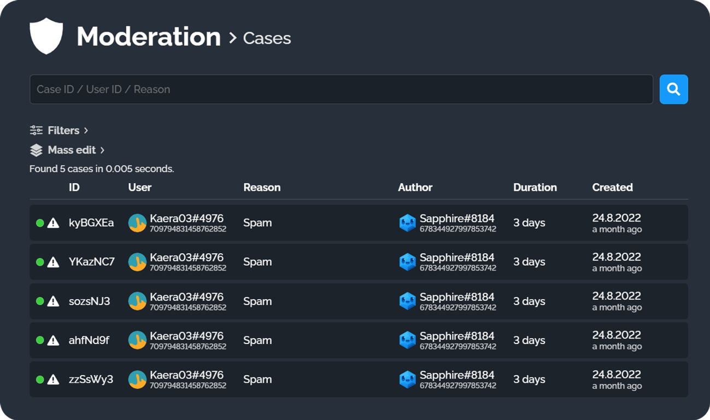
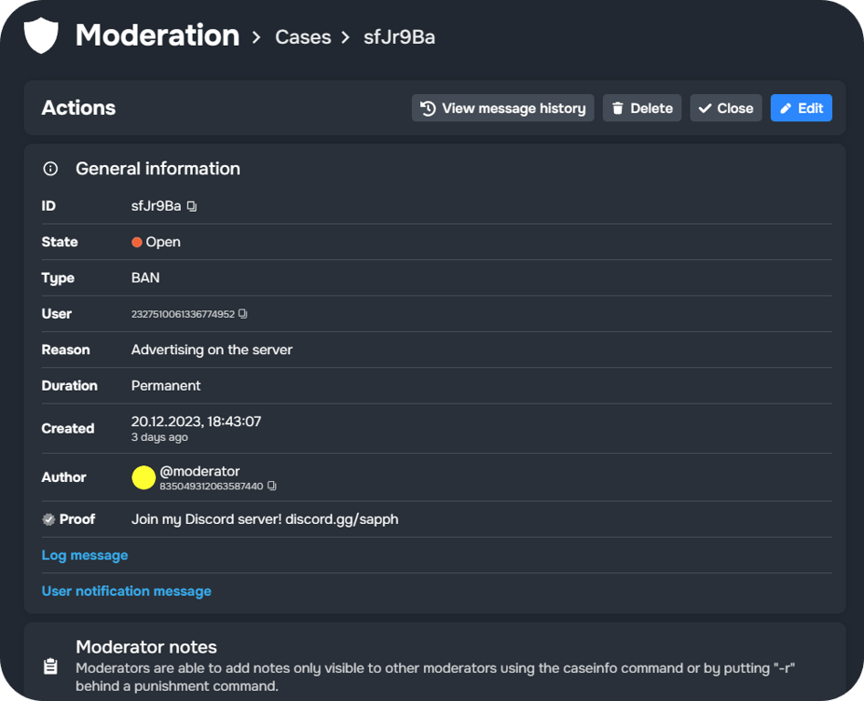

#
Moderacion

El módulo de Moderación de Sapphire es complejo, altamente personalizable y ofrece una amplia gama de comandos.
La siguiente página proporciona una descripción general de cómo funciona el sistema de moderación de Sapphire en su núcleo, qué características ofrece y cómo configurarlo a través del panel de control de Sapphire.
Puedes encontrar una lista de todos los comandos de moderación filtrándolos en la sección Commands ➜ Default Commands (Comandos ➜ Comandos Predeterminados) del panel de control de Sapphire.
#
Casos
Introducción El sistema de moderación de Sapphire utiliza casos para almacenar la información de las sanciones. Cada vez que se realiza una acción de sanción moderativa, Sapphire genera un ID de caso que sirve como un identificador único para esa sanción. Una sanción se refiere a un baneo (ban), silencio (mute), expulsión (kick) o advertencia (warn).
Un caso almacena su ID de caso, tipo de sanción, ID de usuario, razón, duración, fecha de creación, autor, prueba, prueba verificada y notas del moderador, junto con los últimos cinco mensajes del usuario sancionado por canal. Si está habilitado, Sapphire también muestra los mensajes eliminados de ese usuario de los últimos 30 minutos.
Descripción General El módulo de Casos proporciona un resumen completo de todos los Casos de Moderación en un servidor. La información importante sobre la sanción es visible de un vistazo, y se pueden ver más detalles o acciones al hacer clic en cada caso.
En la página de resumen, es posible hacer lo siguiente:
- Filtrar por tipo de sanción, estado abierto del caso o mostrar casos masivos.
- Editar masivamente, cerrar o eliminar casos.
- Hacer clic en un caso para ver más detalles sobre el mismo y la sanción.

Viendo un caso Para ver más detalles de un caso específico, haz clic en él en la lista. Esto abre la página de detalles del caso.
Detalles e Información

#
Reportes de Usuarios (User Reports)
Los Reportes de Usuarios son una función de Moderación que permite a los usuarios enviar reportes sobre otros usuarios, con opciones personalizables para que los moderadores manejen y gestionen esos reportes.
Cuando se crea un reporte, envía un mensaje a un canal seleccionado que contiene los detalles del reporte y botones de acción. Los moderadores pueden aceptar o ignorar los reportes, y tomar acciones como ejecutar comandos, abrir casos de moderación o eliminar mensajes.
#
Configuraciones de Sanciones (Punish Settings)
La categoría Configuraciones de Sanciones te permite cambiar lo que sucede cuando baneas, expulsas, silencias y adviertes, cambiar los valores predeterminados de estos tipos de sanciones y más.
Todos los valores modificables (Algunos de los siguientes campos pueden no estar disponibles para todas las sanciones).
Más opciones
#
Roles Inmunes (Immune roles)
Los roles inmunes están exentos de acciones punitivas. Este módulo te permite definir roles que no pueden ser sancionados con Sapphire. Esto evita que los moderadores sancionen accidental o intencionalmente a los administradores u otros miembros con ciertos roles.
Los roles pueden ser inmunes a tipos específicos de acciones de moderación, agrupados en las siguientes categorías:
Para agregar un rol, haz clic en el símbolo + dentro del tipo de sanción.
Usar jerarquía de roles (Use role hierarchy)
#
Notificaciones de usuario
Elige si deseas notificar a los usuarios por mensaje directo (DM) cuando son sancionados o cuando se les retira la sanción.
- Notify users on punish (Notificar a los usuarios al sancionar): Si está habilitado, los usuarios que sean sancionados recibirán un mensaje directo de Sapphire. Esto incluye las sanciones a través del AutoMod de Sapphire y mediante comandos.
- Notify users on unpunish (Notificar a los usuarios al retirar sanción): Si está habilitado, los usuarios a los que se les retire la sanción recibirán un mensaje directo de Sapphire. Esto incluye vencimientos (cuando acaba el tiempo) y retiros de sanciones por comando.
- Notify users on punish by another user/bot (Notificar al sancionar por otro usuario/bot): Si está habilitado, los usuarios que sean sancionados manualmente en Discord o por otro bot recibirán un mensaje directo de Sapphire.
- Notify users on unpunish by another user/bot (Notificar al retirar sanción por otro usuario/bot): Si está habilitado, los usuarios a los que se les retire la sanción manualmente en Discord o por otro bot recibirán un mensaje directo de Sapphire.
#
Razones Predefinidas (Predefined Reasons)
La categoría de Razones Predefinidas de la función de moderación te permite preconfigurar motivos para las sanciones. Se pueden usar alias para mostrar la razón completa configurada en el panel de control.
Por ejemplo, si defines "Comportamiento inapropiado" como una razón predefinida con el alias r1, puedes escribir mute @user r1, y el caso de moderación resultante mostrará "Comportamiento inapropiado" como la razón completa.
#
Bloqueo de Canales (Channel Locking)
Bloquea canales en un servidor usando los comandos lock y unlock. Bloquear canales evita que los usuarios envíen mensajes o se unan a canales de voz.
Roles ignorados (Ignored roles) Los roles añadidos a esta lista son ignorados por el sistema de bloqueo de canales de Sapphire. Esto significa que Sapphire no modificará sus permisos al bloquear un canal. Sin embargo, si no existen anulaciones de permisos explícitas para estos roles, aún pueden verse afectados por el bloqueo, impidiéndoles enviar mensajes o unirse a canales de voz.
Cuando se desbloquea un canal, todos los permisos vuelven a su estado anterior, lo que significa que cualquier cambio realizado mientras el canal estaba bloqueado se descartará.
Canales a bloquear al usar lockall
Los canales añadidos a esta lista se bloquearán simultáneamente al ejecutar el comando lockall.
#
Privacidad
La página de Privacidad te permite configurar qué información de los casos es visible para los usuarios.
Detalles del mensaje de salida del comando Los detalles que se agregan en este campo serán visibles en todos los mensajes de salida de los comandos relacionados con la Moderación, por ejemplo, después de ejecutar un comando de sanción. Se pueden mostrar los siguientes detalles:
Detalles del mensaje directo (DM) Los detalles agregados a este campo serán visibles en todos los mensajes de notificación directos. Se pueden mostrar los mismos detalles (Prueba Verificada, Autor, Prueba).
Purgar mensajes fijados (Purge pinned messages)
Elige si los mensajes fijados en un canal deben ser eliminados al usar el comando purge.
#
Resumen de comandos
(Esta función también se puede configurar y gestionar a través del panel de control de Sapphire).
Crear sanciones
Deshacer sanciones
Gestionar casos de sanción
Moderación de canales
Información del usuario
Moderación: Reportes de Usuarios (User Reports)
Misceláneo (Miscellaneous)
TS-1